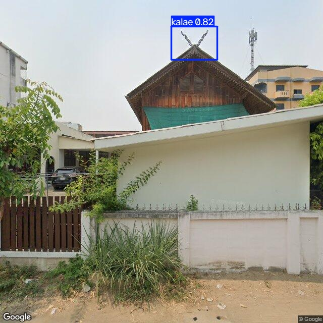
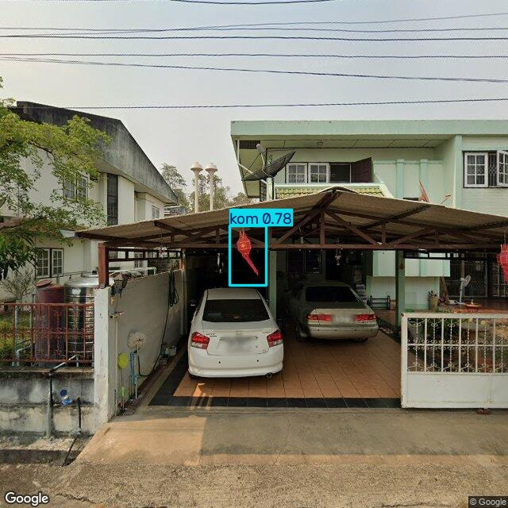
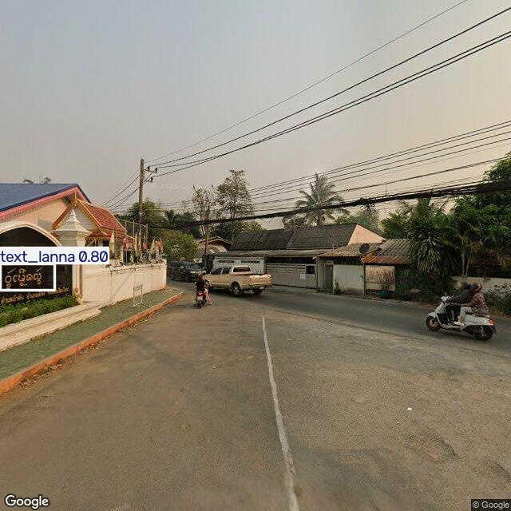

01
กาแล
ไม้แกะสลักที่ประดับอยู่บนยอดจั่วหลังคาของบ้านหรือเรือนไม้โบราณล้านนา โดยติดในลักษณะไขว้กันเป็นรูปกากบาท
CULTURE EXPLORER · CHIANG MAI
สำรวจโคม กาแล และอักษรล้านนาที่ปรากฏอยู่บนเส้นทางในเมือง
เริ่มสำรวจ ↓WHAT TO LOOK FOR

ไม้แกะสลักที่ประดับอยู่บนยอดจั่วหลังคาของบ้านหรือเรือนไม้โบราณล้านนา โดยติดในลักษณะไขว้กันเป็นรูปกากบาท

เครื่องโคมไฟที่มีที่บังลม เป็นเครื่องพุทธบูชาและเครื่องประดับตกแต่งเพื่อความสิริมงคล ที่เชื่อมโยงพื้นที่สถาปัตยกรรมและกิจกรรมชุมชน

เรียกว่า “อักษรธรรมล้านนา” หรือชาวล้านนาเรียกว่า “ตั๋วเมือง” ใช้บันทึกเรื่องราว วัฒนธรรม และศาสนาในภูมิภาคล้านนาในอดีต